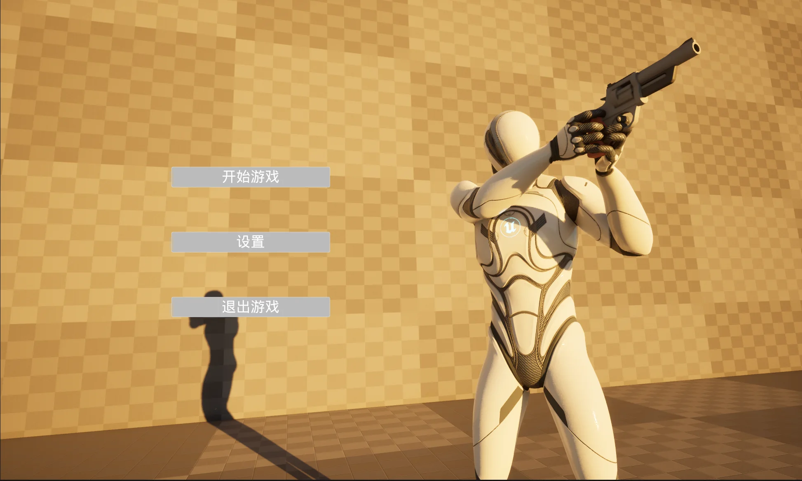
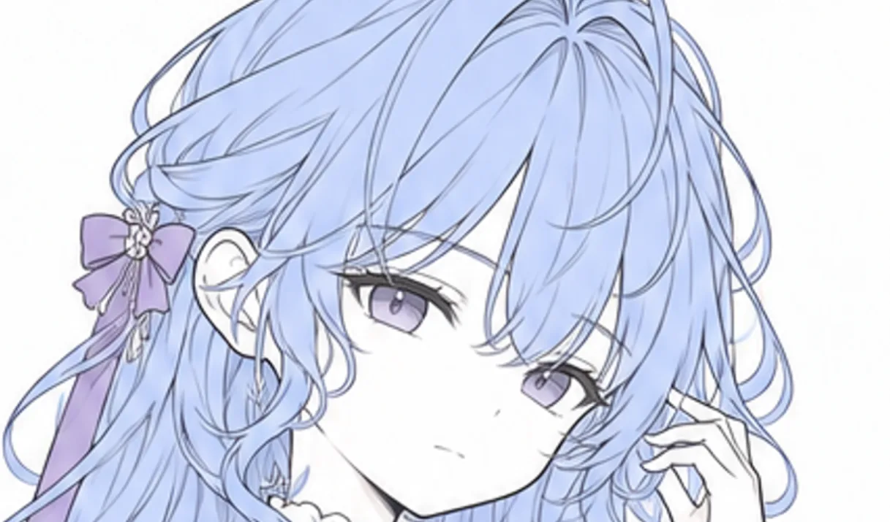
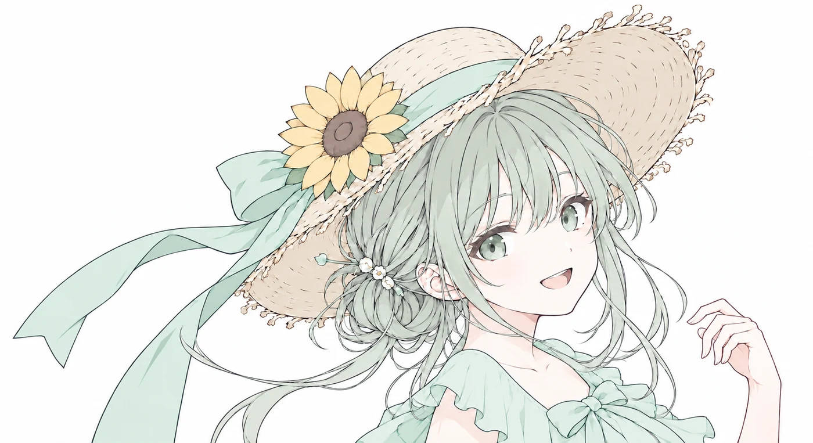
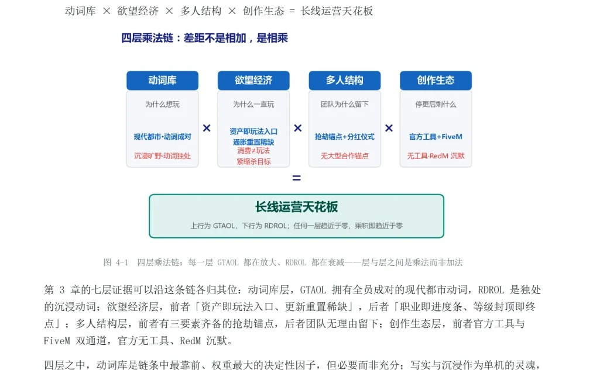
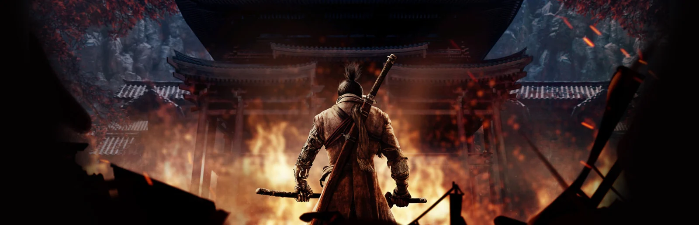

GAME DESIGN / SELECTED WORKS
让设计，
在游戏里发生。
我是吕翰宇，关注系统规则如何转化为玩家的选择。
这里记录我的游戏设计与实现过程。
系统策划 / UE5 蓝图 / 玩法与数值
SELECTED WORKS
精选作品

SELINA —
Scen —SYSTEM ANALYSIS
系统分析


ANALYSIS 02 — COMPETITIVE RESEARCH
GTAOL × RDROL 竞品分析
从玩法、资产、任务、经济等七个层面对照两款游戏，分析单机内容如何转化为线上玩法，以及经济循环与内容供给的差异。
查看分析报告 ↗文档与资料
DOCUMENTS & FILES
快速了解项目可先读精简版；完整报告与系统 PRD 可在线阅读或下载。
DESIGN CAPABILITIES
把规则写清楚，把过程做出来。
我以为主要方向，关注规则如何形成玩家的选择，并通过把设计变成可操作的体验。
围绕组织资源循环与技能协同，结合推演收益与节奏，也通过理解不同游戏的运行逻辑。
以作为补充，理解角色动机与主题，支持玩法与文案之间的需求沟通。
点击加粗词语，查看具体能力与作品。
系统设计与规则落地
将玩法目标拆解为流程、状态与边界规则，整理为可供实现的系统需求。
战斗与角色机制设计
围绕角色定位组织资源循环、状态切换与技能协同，明确输出和辅助的分工。
数值设计与分析
关注资源收支、收益结构与输出节奏，通过配置与数值模型辅助机制推演。
系统拆解与比较分析
梳理系统间的依赖关系，对照不同游戏的玩法结构、经济循环与内容供给。
原型实现与验证
使用 UE5 蓝图将规则转化为可操作流程，通过实机呈现玩法与系统的运行结果。
叙事理解与角色表达
将角色动机、主题与技能表现相联系，支持玩法与叙事衔接，以及跨岗位需求沟通。
MY TOOLKIT
我使用的工具
点击图标，了解我如何使用它。
游戏引擎
交互与原型
三维制作
影像与后期
AI 工具
- 熟悉程度
- 掌握内容
- 相关作品
此处展示的是我相对更为熟悉的工具。此外，也接触过 Adobe Illustrator（AI）、XMind、剪映等工具。
PLAY HISTORY
游戏经历
点击游戏，查看我的游玩记录。

ARPG / 动作
只狼
- 8 周目 · 双难
其他二次元游戏500h+
其他游戏累计3000h+
游戏经历丰富，此处仅列举部分代表作品，不再一一赘述。另有《集合啦！动物森友会》、守墓人系列等游玩经历。系列时长均为合计，系列配图采用其中一部作品的宣传素材。
GET IN TOUCH
联系我
点击图标，查看联系方式。